Overview
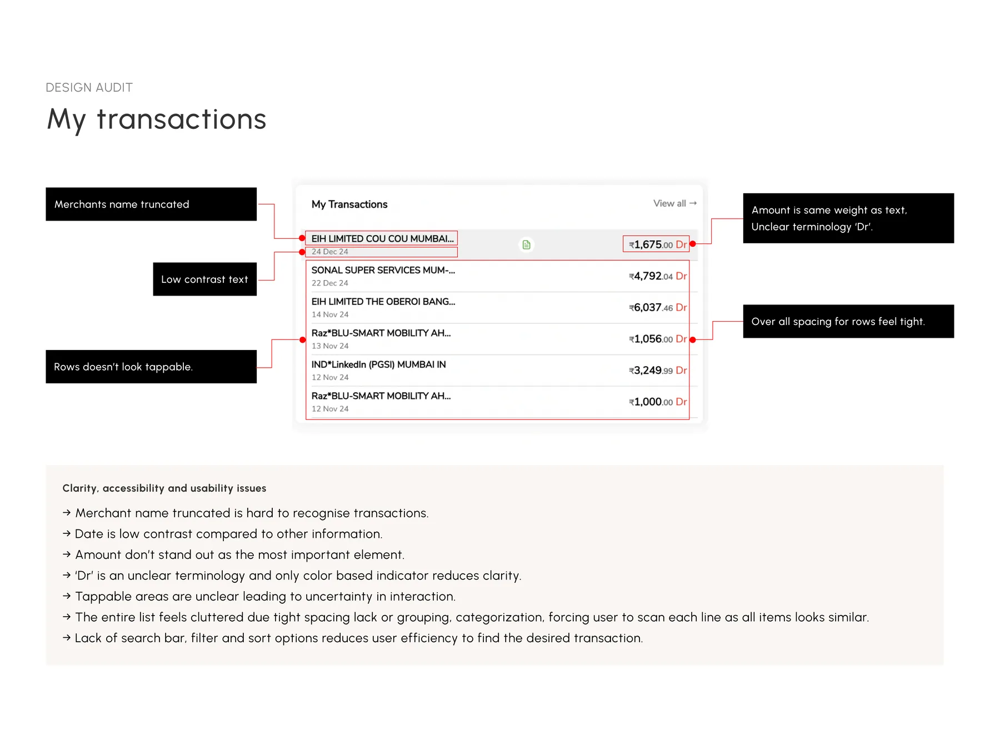
Design Audit — Transaction List
The list forced users to scan every line — truncated merchant names, low-contrast dates, amounts with no visual weight, the unclear 'Dr' terminology, and no search, filter, or sort to fall back on.
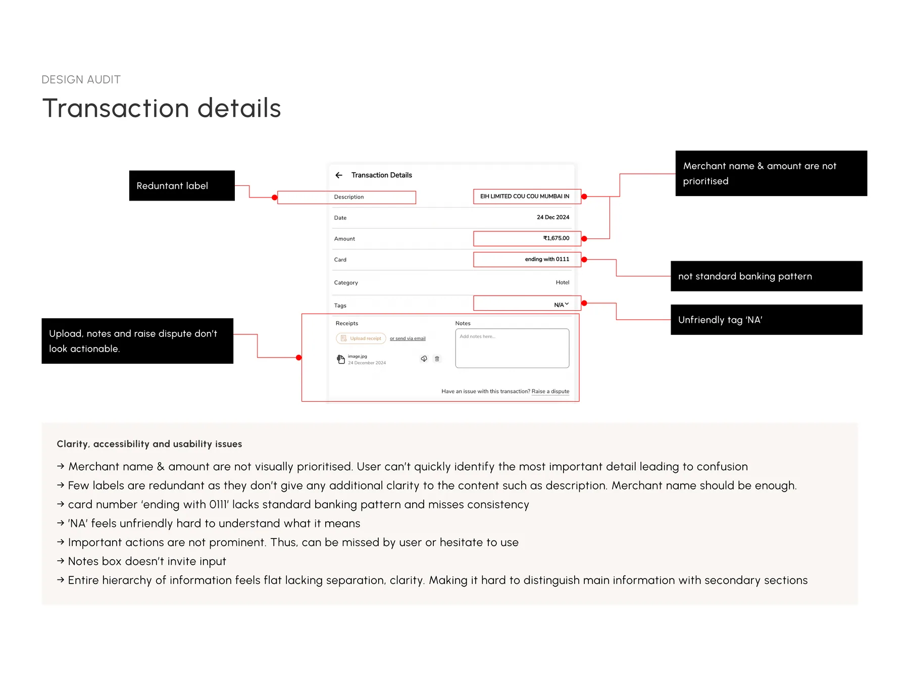
Design Audit — Transaction Details
In the details view, merchant name and amount weren't prioritised, labels were redundant, the card number broke standard banking patterns, 'NA' felt unfriendly, and key actions — upload, notes, raise dispute — didn't look actionable. The whole hierarchy felt flat.
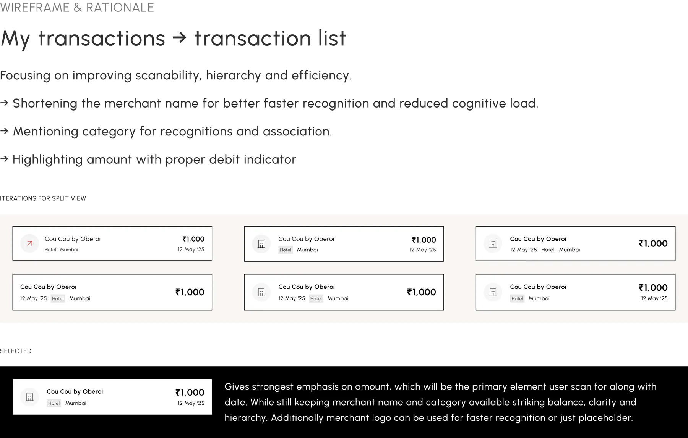
Problem Statement
Users of the My Transactions screen struggle to quickly find, understand, and manage their expense records — important details and key actions are not visually prioritised, leading to confusion, reduced trust, and slower management.
How might we design the transactions list and details view so critical information stands out clearly and reduces cognitive load?
How might we make it faster for users to search, filter, and manage transactions so they can complete key tasks with minimal effort?
The User
Employees using corporate cards for business expenses — hotel bookings, rides, meals — who need to review their spends, upload receipts, and add context for compliance.
Wireframes — Transaction List
Explored multiple row layouts focusing on scannability, hierarchy, and efficiency — shortened merchant names for faster recognition, visible category for association, and the amount highlighted with a proper debit indicator. The selected layout puts the strongest emphasis on amount, the primary element users scan for, while keeping merchant name and category in balance.
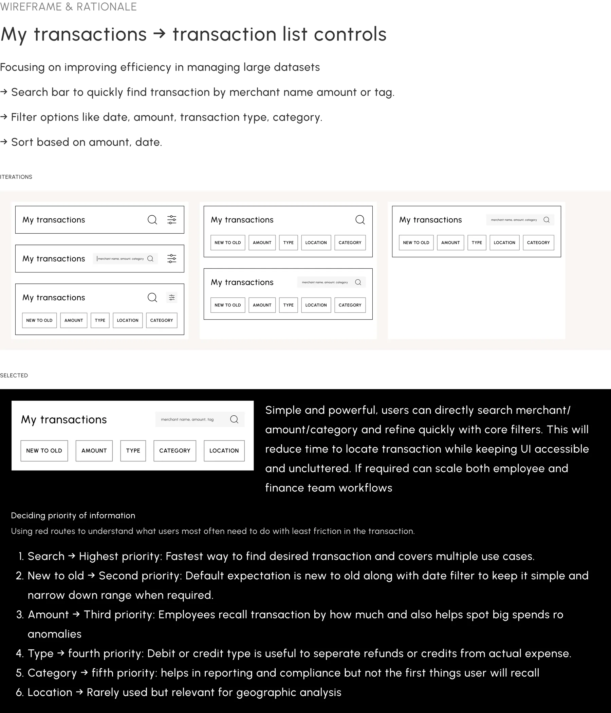
For managing large datasets: a search bar covering merchant, amount, and tag; filters for date, amount, type, and category; and sorting. Priorities were decided using red routes — search first (fastest path, covers most use cases), then new-to-old sorting, amount, type, category, and location last.
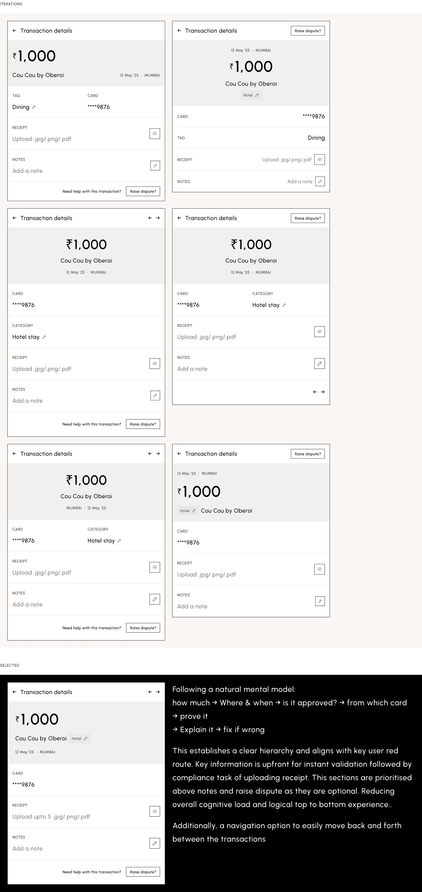
Wireframes — Transaction Details
The details view follows a natural mental model: how much → where & when → from which card → prove it → explain it → fix if wrong. Merchant name, amount, and date sit upfront for instant validation; receipt is prioritised above notes for compliance; secondary actions stay visible but unobtrusive. Plus navigation to move between transactions without going back.
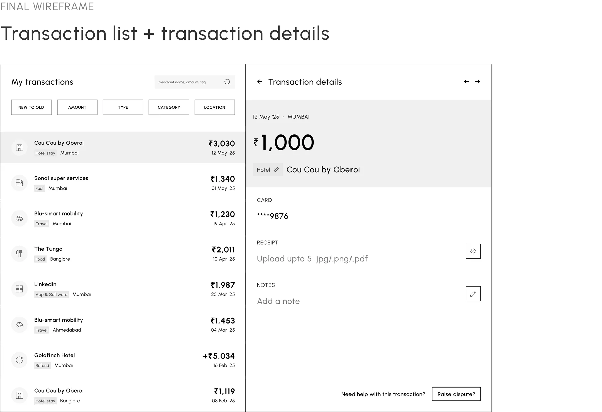
Final Wireframe
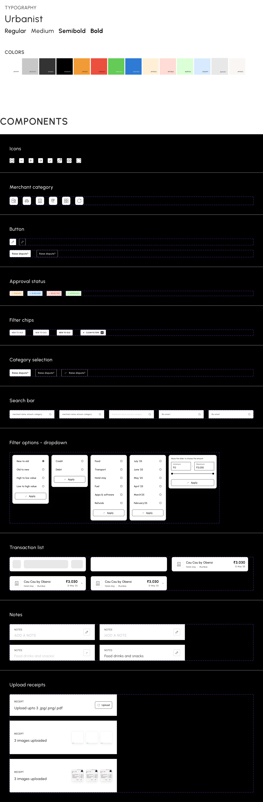
Visual Language
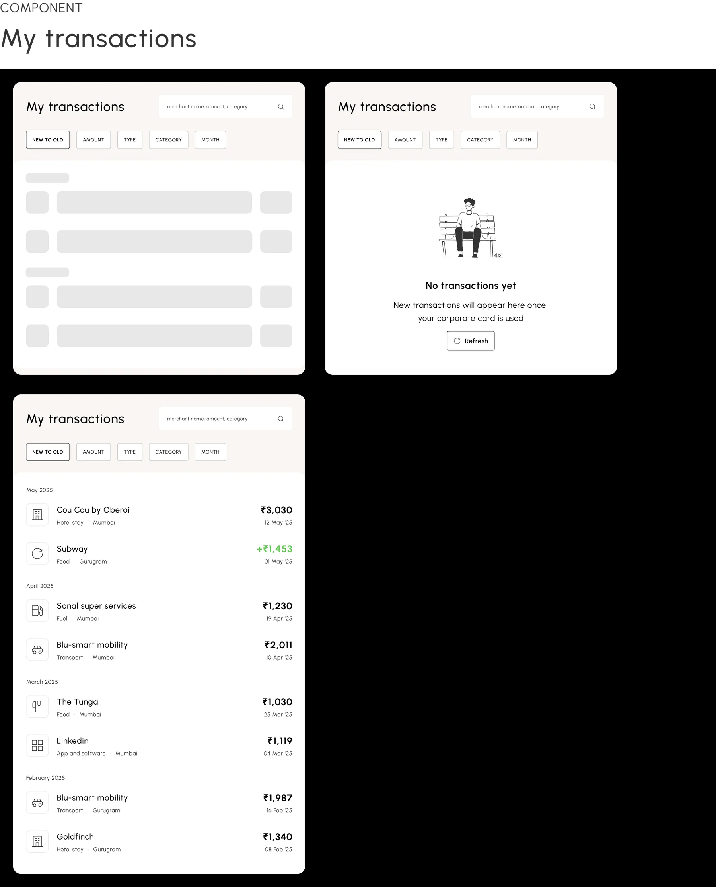
Component Library
Every state designed — icons, merchant categories, buttons, approval statuses, filter chips, search, dropdowns, list rows, notes, and receipt uploads — including empty, default, and filled states.
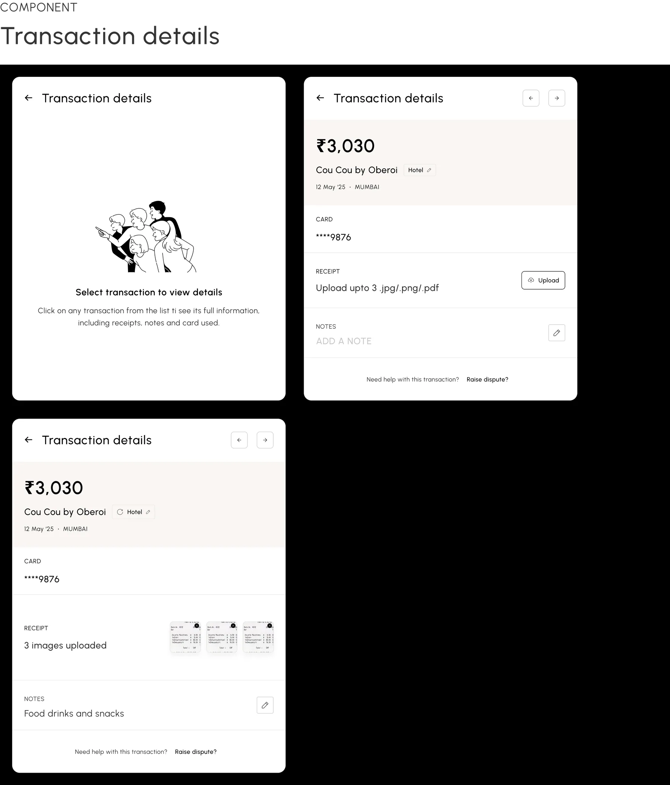
Final UI — Split View
List on the left for fast scanning, details on the right for instant context — ideal for finance reviewers processing many transactions. Reviewers move through items without losing list context or filter state, bulk workflows get easier, and the master/detail structure makes summary vs. deep detail obvious.
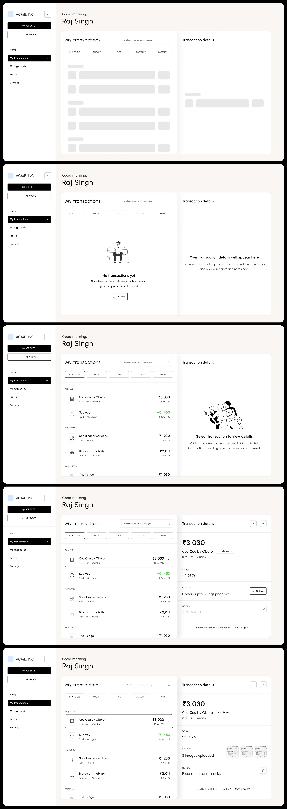
Explorations
An alternate full-panel filter view — simple and effective for small datasets, but limited for multi-month selection and real-time results. And a dropdown (expandable row) layout — quick inline access, but it cluttered the list and didn't scale for compliance tasks. The split view won on both counts.
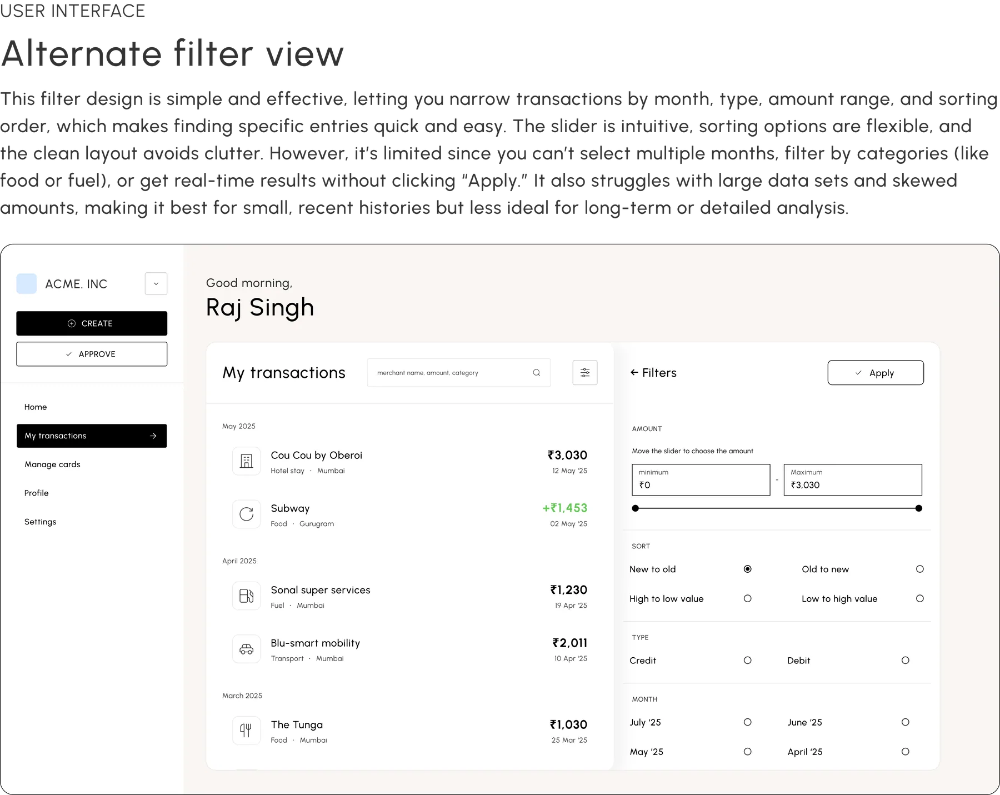
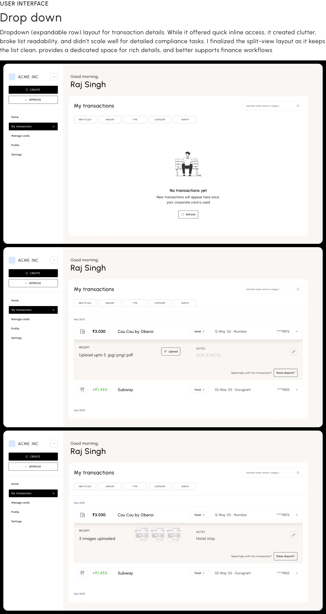
Mobile
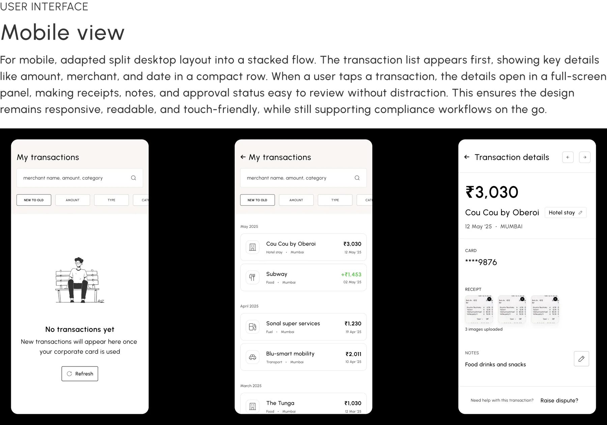